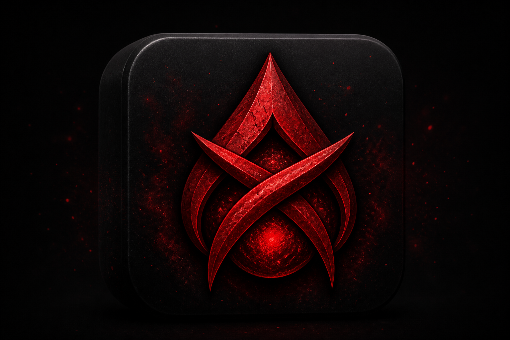

Fabric • Minecraft 26.1.2
BloodPact
Launch with your selected version pack. Mods sync automatically when you press Play.
Launch status
Ready to launch

Preparing client...
Fabric • Minecraft 26.1.2
Launch with your selected version pack. Mods sync automatically when you press Play.
A newer BloodPact build is ready.
Ready to launch
Essential mod stays on (except Vanilla) so friends can share worlds. First Play installs Minecraft, Fabric, and mods.
Pick a seed before Play — auto-fills Create World and warps you to the loot spot.
No seed selected — singleplayer uses random worlds.
Toggle optional mods for the active version pack.
Search and add mods for your Minecraft version.
Installed into this profile's mods folder.
Memory, paths, and update options.
Checking for updates...
No crashes recorded for this profile.